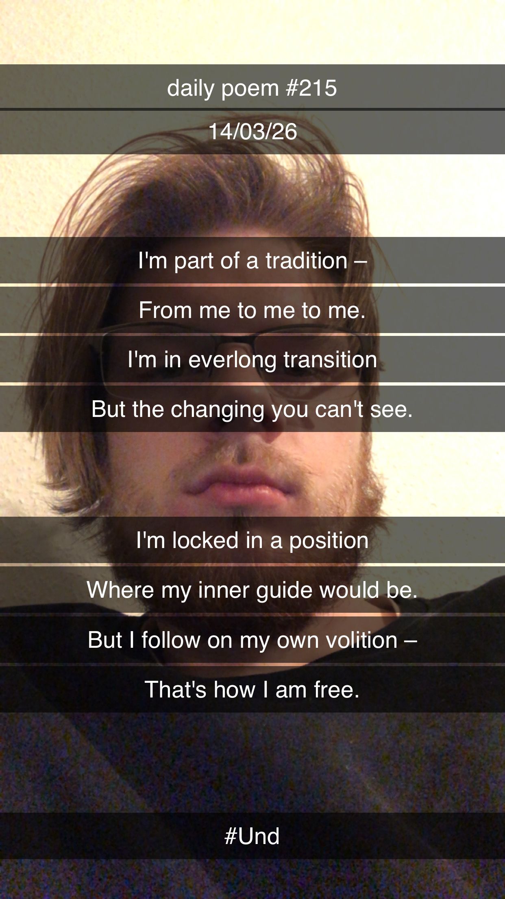

Part of a Tradition
I'm part of a tradition –
From me to me to me.
I'm in everlong transition
But the changing you can't see.
I'm locked in a position
Where my inner guide would be.
But I follow on my own volition –
That's how I am free.
